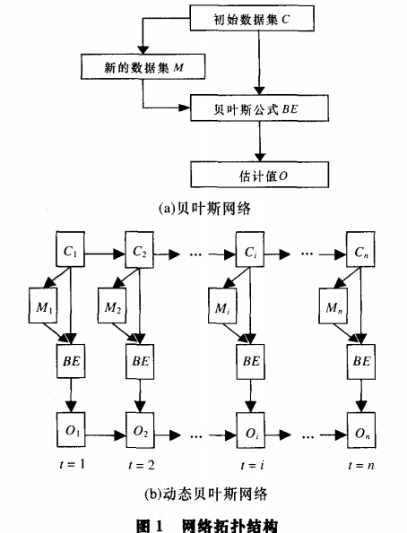
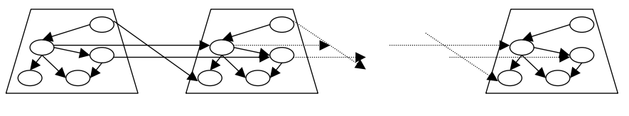
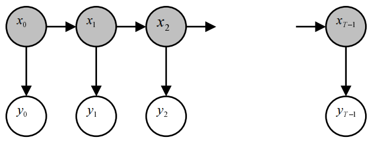

3,033 words in total, 13 minutes required. 1. 引言动态贝叶斯网络（Dynamic Bayesian Network, DBN）是一种暂态模型（transient state model），能够学习变量间的概率依存关系及其随时间变化的规律。其主要用于时序数据建模（如语音识别、自然语言处理、轨迹数据挖掘等）。隐马尔可夫模型（hidden markov model, HMM）是一种结构最简单的动态贝叶斯网络。线性状态空间模型（linear state-space models）如卡尔曼滤波也可以等价看做是动态贝叶斯网络的一种形式[2]。 静态贝叶斯网络反映了一系列变量间的概率依存关系，没有考虑时间因素对变量的影响。相比之下，动态贝叶斯网络是延时间轴变化的贝叶斯网络。 动态贝叶斯网络可以看作是应用贝叶斯统计的思想结合动态结构的模型，它既考虑系统外部影响因素，又考虑系统的内部间相互的关联，既能够变量之间的概率依存关系，又能描述这一系列变量随时间变化的情况，是贝叶斯网络在时间变化过程上的扩展[1]。 在动态贝叶斯网络中，状态随时间的改变是由“动力”（motive force）带来的，这和时序模型是天然相称的。在动态贝叶斯网络中，时间片（time slice）的粒度，既可以是一个时间点也可以是一个时间段。当然，由于时间段可以看做是一组连续的时间点，因此通常时间点是更为合称和具有通用性的表达形式。 为方便处理，假设动态贝叶斯网络满足2个条件： 网络拓扑结构不随时间发生改变，即除去初始时刻，其余时刻的变量及其概率依存关系相同； 满足一阶马尔可夫条件，即给定当前时刻的状态后，未来时刻的状态和先前时刻的状态无关。 满足上述条件后，动态贝叶斯网络可以看作是贝叶斯网络在时间序列上的展开，如下图所示。  上图中，贝叶斯网络的过程可以看成：新的数据集$M$在初始数据集$C$的基础上获得，使用贝叶斯公式结合初始数据集$C$得到估计值$O$。而动态贝叶斯网络的过程中，每个时刻的变量$X_{t} = \{ C_{t}, M_{t}, O_{t} \}$的概率依存关系随时间$t$变化。在任意时刻，变量$M_{t}$的状态由变量$C_{t}$决定，而$O_{t}$的状态由$C_{t}$和$M_{t}$共同决定，即变量集$X_{t}$的联合概率分布为： $P(X_{t}) = P(C_{t}, M_{t}, O_{t}) = P(C_{t})P(M_{t} \mid C_{t})P(O_{t} \mid C_{t}, M_{t})$ 考虑$O_{t}$和$C_{t}$间的条件概率分布： $P(O_{t} \mid C_{t}) = \frac{P(C_{t}, M_{t}, O_{t})}{P(C_{t})}$$= \frac{\sum_{m} P(C_{t}, O_{t}, M_{t} = m)}{P(C_{t})}$$= \frac{\sum_{m} P(C_{t})P(M_{t} = m \mid C_{t}) P(O_{t} \mid C_{t}, M_{t} = m)}{P(C_{t})}$$= \sum_{m} P(M_{t} = m \mid C_{t}) P(O_{t} \mid C_{t}, M_{t} = m)$ 在时刻$t-1$和$t$之间，变量集$C_{t}$的状态发生了转移，因此，变量集$X_{t}$的转移概率为$P(X_{t} \mid X_{t-1}) = P(C_{t} \mid C_{t-1})$。注意，$M_{t}$和$O_{t}$都是由$C_{t}$决定的。 可以看出，动态贝叶斯网络通过网络拓扑结构反映变量间的概率依存关系及随时间变化的情况，其不但能够对变量所对应的不同特征之间的依存关系进行概率建模，而且对特征之间的时序关系也能很好的加以反映。因此，适合对既具有特征相关性又具有时序相关性的复杂特征进行建模。 2. DBN模型结构每个时间片对应一个静态网络，时间片间通过时间关系进行互联 正如上图所示的典型结构，DBN的结构上具有一些显著的特点[4]： 每个时间片对应的静态模型是一定的，可以看做多个随机变量（状态）相互交互影响的结构 每个时刻的某一个状态可能依赖于上一个时刻的某几个状态和/或当前时刻的某几个状态 我们可以通过T个时刻的隐状态变量$X = \{ x_1, \ldots, x_T \}$和观测变量$Y = \{ y_1, \ldots, y_T \}$的概率分布函数来描述其对应的DSN，如下： $P(X, Y) = P(x_1)\prod\limits_{t=2}^{T}P(x_t \mid x_{t-1})\prod\limits_{t=1}^{T}P(y_t \mid x_t)$ 为了完整地对一个特定的DSN进行描述，我们需要确定以下参数： 状态转移的概率密度函数$P(X_t \mid X_{t-1})$，用于表述状态在时间上的依赖性 观测的概率密度函数$P(Y_t \mid X_t)$，用来描述某一个时间片内部，观测数据对于其他（未观测）结点的依赖性 初始状态的概率密度函数$P(X_1)$，用来描述过程开始之初的状态分布情况 以上的三个要素，在隐马尔科夫模型中可以一一完成对应，而动态贝叶斯网络则是采用了一种更为泛化，具有更通用数据和过程表达能力的模型。 对于上述前两个参数，需要在某个时间片上进行确定，我们通常简单地假定这些概率密度函数是不随时间改变（time-invariant）的。 根据随机变量的状态空间设定，DBN既可以是连续的、离散的或者二者皆有的。 3. DBN的任务及其问题解决DBN主要解决的问题可以列举如下： 推断（inference）：在给定初始分布和一些已知观测的情况下，对未知变量的分布进行求解计算； 解码（decoding）：在模型确定的情况下，根据已知观测结果对最佳（best-fitting probability value）的隐状态进行查找； 学习（learning）：给定一组观测序列，给结构已知模型的参数进行调整，以最好地支持观测到的数据； 剪枝（pruning）：找出当前DSN结构中哪些结点在语义层面上是重要的（semantically important），并将不重要的去除。 3.1 推断推断过程可以看做给定一组有限的$T$个连续的观测变量$Y_{0}^{T-1} = \{ y_0, \ldots, y_{T-1} \}$的情况下，对于连续隐变量序列$X_{0}^{T-1} = \{ x_0, \ldots, x_{T-1} \}$的条件概率分布$P(X_{0}^{T-1} \mid Y_{0}^{T-1})$进行计算。一个具体的例子如下图所示。 已知每个时刻的观测$x_i$，对对应的隐变量$y_i$的取值进行推断 有时候，由于计算$P(X_{0}^{T-1} \mid Y_{0}^{T-1})$过于复杂，可以考虑不对$X_{0}^{T-1}$的每一个排列（constellation）进行条件概率的求解，而转而对概率密度函数的充分统计量（sufficient statistics）进行估计。因此，可以静静选择某一个或几个状态，并在不同时刻对其取值进行估计，即$P(x_{t} \mid Y_{0}^{T-1})$。 推断过程可以通过前向传播（forward propagation）和后向传播（backward propagation）完成。 3.1.1 前向传播$t$时刻的前向概率分布（forward probability distribution）为： $\alpha_t(x_t) = P(Y_{0}^{t}, x_t)$ 根据网络结构的依赖关系，有： $\alpha_{t+1}(x_{t+1}) = P(y_{t+1} \mid x_{t+1}) \sum\limits_{x_{t}}P(x_{t+1} \mid x_t)\alpha_t(x_t)$同时，有：$\alpha_{0}(x_{0}) = P(x_{0})$ 3.1.2 后向传播$t$时刻的后向概率分布（backward probability distribution）为： $\beta_t(x_t) = P(Y_{t}^{T-1} \mid x_t)$ 根据网络结构的依赖关系，有： $\beta_{t-1}(x_{t-1}) = \sum\limits_{x_{t}}P(x_{t} \mid x_{t-1})\beta_t(x_t)$P(y_t \mid x_t)而且，有：$\beta_{T-1}(x_{T-1}) = 1$ 3.1.3 平滑根据当前的观测值，还可以对某一个时刻变量的取值进行推断计算，称之为平滑。平滑操作符（smoothing operator）可以定义如下： $\gamma_{t}(x_t) = P(x_t \mid Y_{0}^{T-1}) = \frac{\alpha_t(x_t)\beta_t(x_t)}{\sum_{x_t}\alpha_t(x_t)\beta_t(x_t)}$ 更高阶的平滑方程也可以在前向和后向概率分布的基础上定义。例如，定义一个一阶的平滑： $\xi_{t, t-1}(x_t, x_{t-1}) = P(x_t, x_{t-1} \mid Y_{0}^{T-1}) = \frac{\alpha_{t-1}(x_{t-1}) P(x_t \mid x_{t-1}) P(y_t \mid x_t) \beta_t(x_t)}{\sum_{x_t}\alpha_t(x_t)\beta_t(x_t)}$ 3.1.4 预测可形式化地描述为求解$P(y_{t+1} \mid Y_{0}^{t})$或者$P(x_{t+1} \mid Y_{0}^{t})$。 $P(x_{t+1} \mid Y_{0}^{t}) = P(x_{t+1}, Y_{0}^{t}) / P(Y_{0}^{t})$$= \sum_{x_t} P(x_{t+1} \mid x_t) \alpha_t(x_t) / \sum_{x_t} \alpha_t(x_t)$ 同时，也可以得到： $P(y_{t+1} \mid Y_{0}^{t}) = P(y_{t+1}, Y_{0}^{t}) / P(Y_{0}^{t})$$= \sum_{x_{t+1}} P(y_{t+1} \mid x_{t+1}) \sum\limits_{x_{t}}P(x_{t+1} \mid x_t)\alpha_t(x_t) / \sum_{x_t} \alpha_t(x_t)$$= \sum_{x_{t+1}} \alpha_{t+1}(x_{t+1}) / \sum_{x_t} \alpha_t(x_t)$ 预测问题可以表示为一个求最大似然（maximum likelihood）的问题： $x^{\star}_{t+1, t} = \arg\max_{x_{t+1}} P(x_{t+1} \mid Y_{0}^{t})$ $y^{\star}_{t+1, t} = \arg\max_{y_{t+1}} P(y_{t+1} \mid Y_{0}^{t})$ 3.2 解码解码问题可以表述如下： $\hat{X}_{0}^{T-1} = \arg\max\limits_{X_{0}^{T-1}} P(X_{0}^{T-1} \mid Y_{0}^{T-1})$ 该问题的求解可以使用经典的动态规划算法——维特比（Viterbi）算法进行求解。 首先考虑以下简单的形式： $\delta_{t+1}(x_{t+1}) = \max\limits_{X_{0}^{t}} P(X_{0}^{t+1} \mid Y_{0}^{t+1})$ 可以对其进行时序上的递推： $\delta_{t+1}(x_{t+1}) = P(y_{t+1} \mid x_{t+1}) \max\limits_{x_t}[P(x_{t+1}, x_t) \max\limits_{X_0^{T-1}} P(X_{0}^{t-1} \mid Y_{0}^{t})]$$= P(y_{t+1} \mid x_{t+1}) \max\limits_{x_t}[P(x_{t+1}, x_t) \delta_{t}(x_{t})]$ 则我们可以把以上简单形式嵌入到下式表达中： $\max\limits_{X_{0}^{T-1}} P(X_{0}^{T-1} \mid Y_{0}^{T-1}) = \max\limits_{x_{T-1}}\delta_{T-1}(x_{T-1})$ 其现实意义在于，为了找到$\hat{X}_{0}^{T-1}$，每一步都求解最大可能概率的隐变量$x_t$，其能够最大化$\delta_{t+1}(x_{t+1})$。 假定给定一个式子： $\psi_{t+1}(x_{t+1}) = \arg\max\limits_{x_t}[P(x_{t+1} \mid x_t) + \delta_{t}(x_t)]$ 则优化的目标为： $\hat{x}_t = \psi_{t+1}(\hat{x}_{t+1})$ 3.3 学习3.4 剪枝DBN和HMM的对比假定目前有$D$个对象，需要在一组图像序列（$t$个时刻）中进行位置状态追踪。 HMM的问题处理： 假定每个对象每个时刻有$K$个可能状态 那么每个时刻的状态$X_{t} = (X_{t}^{(1)}, \ldots, X_{t}^{(D)})$具有$K^{D}$个可能取值 因此，完成推断需要的时间复杂度约为$O(T(K^D)^2)$，而空间复杂度约为$O(TK^D)$ $P(X_t \mid X_{t-1})$需要对$(K^D)^2$个参数进行判定 DBN的问题处理： HMM对于状态空间的描述使用一个单一的随机变量 $X_{t} = \{ 1, \ldots, K \}$ DBN对于状态空间的描述使用一组随机变量 $X_{t}^{(1)}, \ldots, X_{t}^{(D)}$ (分解、离散的形式表达) DBN对于$P(X_t \mid X_{t-1})$的表达采用更为紧凑的参数化图模型（parameterized graph） DBN相比于HMM，在参数个数上指数级别减少，同时其参数估计速度也是指数级地加快了 时间复杂度约为$O(TDK^{D+1})$ $P(X_t \mid X_{t-1})$需要对$DK^2$个参数进行判定 引用1.动态贝叶斯网络简述. ↩2.Dynamic Bayesian Network, Wikipedia. ↩3.A Tutorial on Dynamic Bayesian Networks. ↩4.Dynamic Bayesian Networks: A State of the Art. ↩ Next Post→ Table of Contents 1. 引言2. DBN模型结构3. DBN的任务及其问题解决3.1 推断3.1.1 前向传播3.1.2 后向传播3.1.3 平滑3.1.4 预测3.2 解码3.3 学习3.4 剪枝DBN和HMM的对比引用